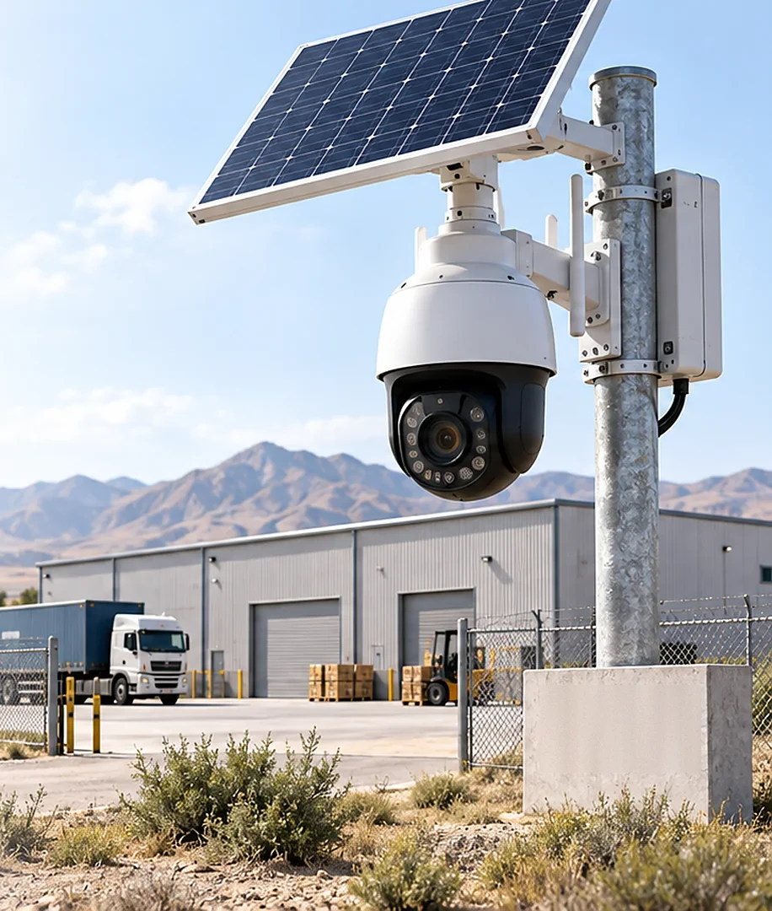

Bitta ustunda butun hovlini qoplaydigan komplekt: 125 Vt panel, 45 A·soat akkumulyator va 25× zumli aylanuvchi kamera. Hikvision bilan bir xil texnik shartda chaqirilsa, tenderda haqiqiy narx raqobati paydo bo'ladi.
150 Vt·soat125 Vt panel dekabrda beradi
0,05–15,5 Vtkameraning ish rejimlari
3,5 kunquyoshsiz zaxira
7–12 mln so'mixcham PT komplekti bilan

Quyosh paneli, boshqaruv qutisi va aylanuvchi kamera bitta ustunda
01
Komplekt tarkibi
Bu Yechim 02 dagi kabi «bitta korpus» emas: panel, akkumulyator, kontroller va kamera alohida qismlar va ular alohida sotiladi. Smetani tuzayotganda akkumulyator komplektga kirmasligini birinchi bo'lib tekshiring.
Qism
Parametr
Nimaga e'tibor
Quyosh paneli
125 Vt, monokristall, 18,8 V
Yuza 0,6 m² — shamol yukini shu belgilaydi
Kontroller
MPPT, 12 V, 10 A, RS-485
Past harorat himoyasi bo'lishi shart
Akkumulyator
12,8 V, 45 A·soat, ≈576 Vt·soat
Alohida sotiladi, komplektga kirmaydi
Kamera
4 MP, 25× zum, IR 100 m, 4G
Aylanish va zum energiyaning katta qismini oladi
Ishlash harorati
−20…+60 °C
Datasheet'da zaryad harorati alohida tekshiriladi
microSD
512 GB gacha
Sanoat sinfi, sovuqda oddiy karta tez ishdan chiqadi
Datasheet komplektni sutkasiga 3,5 soatdan ko'p quyosh tushadigan joylar uchun belgilaydi. Toshkentda dekabrda bu ko'rsatkich chegaradan past — shuning uchun qishga alohida rejim yoki ikkinchi akkumulyator kerak bo'ladi.
02
Beshta ish rejimi va ularning narxi
Aylanuvchi kamerada iste'mol o'zgarmas emas: eng tejamkor va eng och rejim orasida uch yuz barobar farq bor. Shuning uchun qishki nazorat rejasi «kamera nima qiladi» degan savoldan emas, «qaysi rejimda necha soat turadi» degan savoldan boshlanadi.
Ustunlar uzunligi quvvatga mutanosib. Eng yuqori 15,49 Vt — IR, burilish va oqim bir vaqtda ishlaganda; bu holat qisqa davom etadi, lekin qishki byudjetda alohida hisobga olinadi.
Tunda
14 soat IR — byudjetning uchdan ikkisi
Dekabrda tun 14,6 soat. Kamera shu vaqtning hammasida IR bilan ishlasa, u yolg'iz o'zi 116 Vt·soat oladi — sutkalik panel unumining deyarli hammasi. Shuning uchun tungi rejim jadval bilan cheklanadi: IR faqat datchik ishlaganda yoqiladi.
Burilish
Presetga qaytish majburiy
Aylanuvchi kamera har doim biror tomonga qaragan bo'ladi, qolgan tomonlar esa ko'r zona. Hodisa kelganda adapter kamerani tegishli presetga buradi, hodisa tugagach kamera asosiy presetga qaytadi. Qaytmasa, keyingi hodisa noto'g'ri tomonda yoziladi.
03
Dekabr quvvat balansi
125 Vt panel dekabrda sutkasiga taxminan 150 Vt·soat beradi. Kamera tunda IR bilan va kunduzi oddiy rejimda ishlasa, xuddi shuncha oladi: balans nolga teng va bulutli kunlar butunlay akkumulyator hisobidan qoplanadi.
Sutkalik chiqim
soat
Vt·soat
Tun, IR bilan hodisalar va yengil uyqu
14,6
92
Kunduz, oddiy ish
9,4
35
Jonli ko'rish va burilish
0,5
8
Kontroller va kabel yo'qotishi
—
15
Jami chiqim
24
150
Manba va zaxira
Dekabr
Iyun
125 Vt panel, Vt·soat/sutka
150
712
45 A·soat akkumulyator, foydali
520 Vt·soat
520 Vt·soat
Sutkalik balans
0
+562
Quyoshsiz zaxira
3,5 kun
3,5 kun
Uch kun ketma-ket bulut — Toshkent dekabri uchun odatiy hodisa. Shuning uchun komplekt nolga teng balans bilan qabul qilinmaydi: yo ikkinchi akkumulyator qo'shiladi, yo qishda tungi rejim jadval bilan qisqartiriladi.
Amaliy yechim uchinchi yo'l: kamera dekabrda kechqurun 18:00 dan ertalab 06:00 gacha yengil uyquda turadi va faqat datchik ishlaganda to'liq quvvatga chiqadi. Shunda tungi chiqim 92 dan 48 Vt·soatga tushadi va balans musbat bo'ladi. Bu rejim platformadan masofadan yoqiladi va mart oyida o'chiriladi.
04
Ustun, shamol yuki va poydevor
Bu yechimning muhandislik jihatdan eng jiddiy qismi kamera emas, ustun. 125 Vt panel 0,6 m² yelkanga teng va u to'rt metr balandlikda turadi — poydevor xuddi shu yuk uchun hisoblanadi.
Hisob taxminiy va loyihachining aniq hisobini almashtirmaydi. Maqsadi bitta: 125 Vt panelni ustunga qo'yish quruvchilik ishi ekanini ko'rsatish — smetada poydevor alohida qator bo'lishi kerak.
Amalda eng ko'p uchraydigan xato — panelni mavjud eski ustunga yoki devor kronshteyniga qo'yish. Bahorgi birinchi kuchli shamolda panel kronshteyni bilan birga uziladi va bu kamera narxidan qimmatroqqa tushadi.
05
Auto Register, CGI va PTZ buyruqlari
Dahua tarafida ham SIM-kartada oq IP yo'q. Kamerada buning uchun chiquvchi ulanish rejimi bor: u o'zi serverga ro'yxatdan o'tadi va shundan keyin barcha buyruqlar shu kanal orqali yuriladi.
Kamera yuboradiAdapter yuboradiOperator NAT'i — bu chiziqni faqat obyekt kesib o'tadiHar qadamni bosing
Ketma-ketlikning birinchi o'qi eng muhimi: ulanishni kamera boshlaydi. Shundan keyin kanal ochiq qoladi va 2–6-qadamlar bir xil TCP sessiyasi ichida yuriladi — adapter kameraga «murojaat qilmaydi», u shunchaki ochiq kanalga yozadi. Shuning uchun operator NAT'i to'siq bo'lmaydi va bank perimetrida port ochilmaydi. Kanal uzilsa kamera 30 soniyadan keyin qayta ulanadi, uzilish oralig'i esa kamera holati sifatida qayd etiladi.
Yo'l
Afzalligi
Kamchiligi
Auto Register → DSS
SIM oddiy, sozlash tez
DSS litsenziyasi va serveri kerak
Korporativ APN
RTSP, CGI va ONVIF to'g'ridan-to'g'ri
Operator bilan alohida shartnoma
4G router va VPN
Istalgan brend, bitta sxema
Qo'shimcha qurilma va qo'shimcha sarf
Video
Asosiy va qo'shimcha oqim
Platforma panelida qo'shimcha oqim ochiladi. Asosiy 4 MP oqim faqat operator zumlaganda so'raladi — aks holda 4G trafigi ham, akkumulyator ham bir necha barobar tez tugaydi.
Adapter hodisalarga obuna bo'ladi va har besh soniyada yurak urishi signalini oladi. Uchta signal kelmasa kamera «aloqasiz» deb belgilanadi va qayta ulanish boshlanadi.
GET /cgi-bin/eventManager.cgi?action=attach&codes=[All]&heartbeat=5
→ Code=VideoMotion;action=Start;index=0
→ Code=CrossLineDetection;action=Start;index=1
PTZ
Hodisa kelganda kamera qayerga buriladi
Kamerada 300 ta preset va sakkizta tur bor. Adapter hodisa turiga qarab kerakli presetni chaqiradi: darvoza datchigi ishlasa kamera darvozaga, perimetr chizig'i kesilsa shu tomonga buriladi. Buyruq bajarilgani javobdan tasdiqlanadi, tasdiq kelmasa hodisa kartasiga «kamera burilmadi» belgisi qo'yiladi.
GET /cgi-bin/ptz.cgi?action=start&channel=1&code=GotoPreset&arg1=0&arg2=3&arg3=0
Dahua'ning VideoMotion va CrossLineDetection kodlari hamda Hikvision'ning VMD va linedetection turlari adapterda bitta ro'yxatga keltiriladi: harakat, chiziqni kesish, hudud, niqoblash, aloqa. Platforma qaysi brend turganini bilmaydi va keyingi tenderda brend almashsa, hisobotlar o'zgarmaydi.
06
Operator nimani ko'radi va nima qila oladi
Aylanuvchi kamera operatorga eng ko'p imkoniyat beradi va eng ko'p energiya so'raydi. Platforma shu ikkisini bir ekranda ko'rsatadi: har amalning yonida uning akkumulyatorga ta'siri turadi.
Obyekt kartasi. Kamera holati, zaryad darajasi va oxirgi hodisalar bitta ekranda; jonli oqim shu yerdan ochiladi.
Amal
Qanday bajariladi
Cheklov
Zum va burilish
Platformadan, PTZ buyruqlari bilan
Eng qimmat amal: 15,5 Vt gacha ko'taradi
Presetga o'tish
Hodisa turiga qarab avtomatik
Preset ro'yxati montajda tuziladi
Arxivdan klip
microSD'dan playback oqimi bilan
Aloqa tiklangach kechikib kelgan klip ham olinadi
Qishki rejim
Tungi yengil uyqu jadvali masofadan yoqiladi
Byudjetni boshqarishning asosiy vositasi
Qurilma holati
Zaryad, RSRP, microSD xatolari, harorat
Kontroller RS-485 orqali zaryadni ham beradi
07
O'rnatish: ikki kun, uch kishi
Ustunli variantda ish ikki kunga bo'linadi: birinchi kuni poydevor quyiladi, ikkinchi kuni beton ushlagach ustun ko'tariladi va jihoz o'rnatiladi. Buni rejaga oldindan kiritish kerak, aks holda brigada obyektda bekor turadi.
1
Poydevor va ankerlar. Quyma beton, M16 anker guruhi, ustun tagligi gorizontal bo'yicha tekshiriladi. Beton kamida yetti kun quvvat oladi, shoshilinch montaj ustunning egilishiga olib keladi.
2
Yerga ulash. Ochiq maydondagi metall ustun momaqaldiroq paytida eng baland nuqta bo'ladi. Yerga ulash konturi va uzatgich himoyasi majburiy, aks holda birinchi yozgi momaqaldiroq kamerani ham, kontrollerni ham kuydiradi.
3
Panel janubga, 55–60°. Ustunga mahkamlash xomuti ikkita bo'lishi kerak: bitta xomut shamolda buraladi. Panel oynasi kamera kadriga tushmasin — quyoshda u yorqin dog' beradi.
4
Presetlar tuziladi va raqamlanadi. Har preset uchun nima ko'rinishi yozib olinadi: darvoza, orqa kirish, omborning janubiy tomoni. Shu ro'yxat adapterga kiritiladi va dalolatnomaga ilova qilinadi.
5
Sinov: hodisa → burilish → klip. Montajchi perimetr chizig'ini kesib o'tadi, kamera kerakli presetga buriladi, klip platformada ochiladi. Uchala bosqich ham tasdiqlanmaguncha obyekt qabul qilinmaydi.
08
Ikki narx sinfi
Slayddagi 3,5–4,8 mln so'm ixcham PT komplektiga tegishli: kichik panel, ichki akkumulyator, hovli yoki kichik ombor uchun. Katta perimetrda 25× zumli, 125 Vt'li komplekt kerak va u boshqa narx toifasida.
Qator
Ixcham PT
125 Vt komplekt
Kamera va panel
3,5–4,8
so'rov bo'yicha
Akkumulyator
ichida
alohida
Ustun, poydevor, yerga ulash
1,0–2,5
2,0–4,0
Montaj va sozlash
1,0–2,0
1,5–3,0
Obyekt, mln so'm
7–12
ancha yuqori
125 Vt komplektning Yevropa chakana narxi akkumulyatorsiz taxminan 1 725 yevro. O'zbekistondagi narx rasmiy distribyutordan so'raladi va olib kelish, bojxona hamda montaj bilan birga hisoblanadi.
09
Besh yil: servis va sarf materiallari
Ixcham komplekt uchun besh yillik jami taxminan 12–18 mln so'm. Ustunli variantda bunga poydevor va ustunning qayta bo'yalishi, shuningdek balandlikda ishlash uchun ko'targich qo'shiladi.
Nima
Qachon
Besh yilda
4G SIM, trafik
Oyiga 50–80 ming so'm
3,0–4,8 mln so'm
Akkumulyator
3–4 yilda bir marta
1,5–3,0 mln so'm
Servis tashrifi
Yiliga bir marta, ko'targich bilan
2,5–5,0 mln so'm
microSD karta
Sovuqda 2–3 yilda
0,4–0,8 mln so'm
Ustun va kronshteynlarni ko'rish
Har bahorda, shamol mavsumidan keyin
servis jadvalida
10
Uchta buzilish yo'li
Ikkitasi energiya bilan, bittasi mexanika bilan bog'liq. Mexanik nosozlik eng qimmat turadi, chunki uni tuzatish uchun ko'targich va ikkinchi brigada kerak bo'ladi.
Nosozlik 1
Dekabrda balans nolga tushib, kamera uyquga o'tadi
Zaryad kritik darajaga yetganda kontroller yuklamani uzadi. Kamera to'liq o'chadi va uni masofadan yoqib bo'lmaydi: quyosh chiqib akkumulyatorni ko'targunicha obyekt nazoratsiz qoladi.
Nima qiladiQishki rejim kuz oxirida masofadan yoqiladi va tungi chiqim ikki barobar qisqaradi. Kontroller RS-485 orqali zaryadni beradi, platforma 40% chegarasida ogohlantiradi va ikkinchi akkumulyator qo'shish vazifasini ochadi.
Nosozlik 2
Shamol panelni yoki ustunni buradi
Kuchli shamolda panel kronshteyni buraladi, panel janubdan chetga qaraydi va unum sezilarli tushadi. Eng yomon holatda kronshteyn uziladi va panel yerga tushadi.
Nima qiladiIkkita xomut, momentga hisoblangan poydevor va har bahordagi ko'rik. Unum grafigi to'satdan pasaysa, bu ko'pincha panelning burilganini bildiradi — shu belgi bo'yicha ko'rik rejalashtiriladi.
Nosozlik 3
microSD sovuqda ishdan chiqadi
Aloqa uzilganda barcha yozuv microSD'ga tushadi. Oddiy chakana karta uzluksiz yozuv va sovuq sharoitida bir yilni ko'tarmaydi: avval alohida kliplar buziladi, keyin karta umuman yozilmay qoladi.
Nima qiladiSanoat sinfidagi karta olinadi va uning TBW ko'rsatkichi xarid shartiga yoziladi. Kamera «SD xatosi» hodisasini beradi, adapter uni alohida hodisa sifatida platformaga chiqaradi va servis vazifasi ochiladi.
11
Balansdagi qaysi obyektga mos
Aylanuvchi kamera bitta nuqtadan katta maydonni qoplaydi. Shu sababli u eng qimmat obyektlarga qo'yiladi: qo'zg'almas kamera bilan qoplash uchun uchtadan beshtagacha qurilma kerak bo'ladigan joylarga.
Mos keladi
Katta hovlili ishlab chiqarish maydoni: sex, ombor va yo'lakni bitta ustun qoplaydi.
Uzun perimetrli hudud — chiziqni kesish hodisasi bilan.
Ochiq saqlanadigan qimmat mulk: texnika, materiallar, transport.
Bir necha kirishli obyekt: hodisa qaysi kirishda bo'lsa, kamera o'sha tomonga buriladi.
Mos kelmaydi
Kichik bir kirishli obyekt: bu yerda qo'zg'almas kamera arzonroq va tejamkorroq.
Ustun qo'yish imkoni yo'q joy: tor hovli, ijaradagi yer, ruxsat berilmagan maydon.
Panelga kun tushmaydigan joy — balans allaqachon nolga yaqin.
Uzluksiz yozuv talab qilinadigan obyekt: bu rejimda akkumulyator bir kunga ham yetmaydi.
Ichki makon: quyosh yo'q, aylanish esa keraksiz.
12
Sotuvchiga xarid oldidan beriladigan savollar
Aylanuvchi kamerada savollar ro'yxati uzunroq: energiya, mexanika va protokol uchta alohida javob talab qiladi.
Har bir rejim uchun iste'mol quvvati datasheet'da ko'rsatilganmi?Chuqur uyqu, yengil uyqu, oqim, IR va burilish — beshtasi alohida.
Zaryad harorati ishlash haroratidan alohida yozilganmi?Kontrollerdagi past harorat himoyasi hujjat bilan tasdiqlansin.
Akkumulyator komplektga kiradimi va uni alohida olish mumkinmi?Ko'p taklifda akkumulyator alohida sotiladi, bu smetada unutiladi.
Ustun va poydevor loyihasi beriladimi?Shamol yuki hisobi kimning zimmasida ekani shartnomada aniq bo'lsin.
CGI sintaksisi qaysi mikrodastur versiyasiga tegishli?Buyruqlar versiyaga qarab o'zgaradi, pilotda sinab tasdiqlanadi.
ONVIF Profile S, G va T bormi?Brenddan mustaqil bo'lish shu javobga bog'liq.
Auto Register qabul qiluvchi tomonining protokoli ochiqmi?Ochiq bo'lmasa DSS serveri va litsenziyasi majburiy qatorga aylanadi.
Kafolat ustundagi mexanik qismlarni ham qamraydimi?Ko'pincha kafolat faqat elektronikaga beriladi, kronshteynga emas.
13
Boshqa yechimlar bilan yonma-yon
Bir obyektga bitta yechim tanlanadi va tanlovni obyektning issiqligi, perimetri va yozuv talabi belgilaydi.